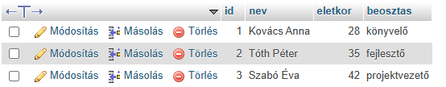

A SELECT lekérdezés az SQL-ben az adatok lekérdezésére, vagyis kiválasztására szolgál adatbázis-táblákból. Segítségével megadható, hogy mely oszlopokból és milyen feltételek szerint szeretnénk adatokat visszakapni. A lekérdezés kiegészíthető szűréssel (`WHERE`), rendezéssel (`ORDER BY`), csoportosítással (`GROUP BY`) és összesítő függvényekkel is. A SELECT lekérdezés nem módosítja az adatokat, csupán olvasást végez. Használható egyetlen vagy több tábla adatainak lekérdezésére is, például összekapcsolás (`JOIN`) révén. Ez az SQL nyelv egyik legalapvetőbb és leggyakrabban használt utasítása.
SELECT id, nev, eletkor, beosztas
FROM dolgozok;
Erdemény:

Az UPDATE lekérdezés meglévő adatok módosítására szolgál egy adatbázis-táblában. Segítségével megadhatjuk, mely oszlop(ok) értékét szeretnénk frissíteni, és a WHERE feltétellel azt is meghatározhatjuk, hogy mely sor(ok)ban történjen a módosítás. Ha a WHERE feltételt kihagyjuk, akkor az összes sorban végrehajtódik a frissítés. Ezért mindig fontos pontosan megadni, mely rekordokat akarjuk módosítani. Az UPDATE nem hoz létre új sort, csak meglévő adatot változtat meg. Gyakran használják például hibás adatok javítására vagy státuszok, értékek frissítésére.
UPDATE dolgozok
SET eletkor = 36
WHERE nev = 'Tóth Péter';
DELETE FROM dolgozok
WHERE nev = 'Tóth Péter';